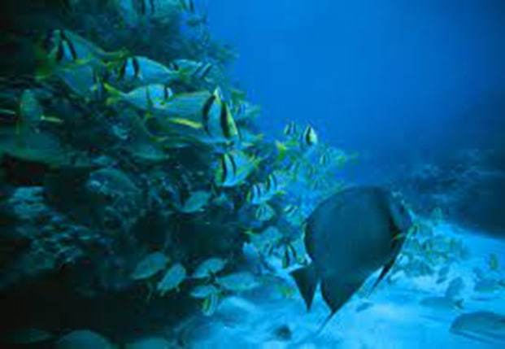

Marine Biodiversity

The oceans support a staggering diversity of life, including 230,000 known marine species, a complex ecosystem, and specialized habitats for various species. Each species serves a specialized function in its ecosystem, such as feeding zooplankton and maintaining water purity. Biodiversity boosts resilience to environmental disturbances like climate change and pollution. Oceans are critical to human well-being because they provide food, livelihoods, and economic advantages via fishing, tourism, and coastal businesses.
They also serve an important function in removing carbon dioxide from the atmosphere, which helps to prevent climate change. Oceans are also culturally significant and provide leisure options. maritime protected areas, sustainable fishing practices, pollution reduction, climate change mitigation, maritime research, and raising public awareness about the importance of oceans and marine biodiversity are all conservation measures.
Ecosystem Services
Marine biodiversity is critical for maintaining ecological balance and providing ecosystem services that benefit human well-being. Fisheries, climate regulation, water purification, oxygen production, tourism and recreation are examples of these services. Seafood is an important protein source for people all around the world, and sustainable management assures a steady supply.
Coral reefs, mangroves, and seagrass beds collect and store carbon dioxide, thereby lowering global warming and climate-related concerns. Coastal locations operate as natural water purification systems, increasing downstream water quality. Phytoplankton, microscopic sea organisms that produce oxygen via photosynthesis, contribute to the production of breathable air. The oceans and their biodiversity influence weather patterns, which impact agriculture and water resources.
Climate stability has an indirect impact on landlocked locations, altering agriculture and water supplies. Diverse marine environments draw visitors, producing cash and job opportunities. Marine biodiversity is critical for landlocked regions because it ensures food security, clean water, stable climate conditions, and economic opportunity.
Ocean Conservation
Landlocked areas contribute considerably to ocean conservation efforts by minimizing plastic pollution, promoting sustainable seafood options, participating in Marine Protected Area (MPA) programs, and safeguarding rivers and watersheds. These areas are big seafood consumers, which influences the demand for sustainable practices. Through campaigning, finance, and scientific collaboration, they can also help to construct and manage MPAs.
Landlocked locations are extremely important for river and watershed conservation, as they limit pollution and habitat loss. They can also lobby for robust ocean-protection legislation and regulations, as well as promote worldwide ocean-conservation accords.
In conclusion, landlocked areas have a significant role to play in ocean conservation efforts. Collaboration between landlocked regions and coastal communities is essential for holistic and effective ocean conservation.
Global Interconnectedness
The interconnectedness between landlocked and coastal regions is a crucial aspect of our planet's ecosystem, highlighting how actions in one area can have profound impacts on the health of our oceans. Landlocked regions play a crucial role in the quality and quantity of freshwater that flows into the oceans, but pollution, deforestation, and unsustainable agriculture practices can lead to contamination of rivers and lakes, affecting water quality, marine life, and ecosystems.
Biodiversity in landlocked ecosystems directly impacts the biodiversity of coastal regions, and destruction or alteration of habitats in landlocked regions can disrupt migration patterns, leading to imbalances in coastal ecosystems. Climate change, agricultural practices, resource extraction, global trade, ocean acidification, and climate regulation are all interconnected.
Landlocked regions often rely on coastal access for international trade, but the health of the oceans can significantly impact the economic stability of landlocked countries. Changes in land use, deforestation, and industrial emissions in landlocked areas contribute to increased atmospheric carbon levels, affecting ocean acidification, and disrupting the delicate balance of the Earth's climate systems. Human health and livelihoods are also profoundly affected by the interconnectedness of landlocked and coastal regions.
Conclusion
Marine biodiversity is essential for ecological balance and ecosystem services such as fisheries, climate regulation, water purification, and tourism. Landlocked regions help to save the oceans through reducing plastic pollution, promoting sustainable seafood, and participating in Marine Protected Area programmes. Collaboration between coastal and inland populations is critical for holistic ocean protection. Water quality, marine life, and ecosystems can all be harmed by pollution, deforestation, and unsustainable agriculture.